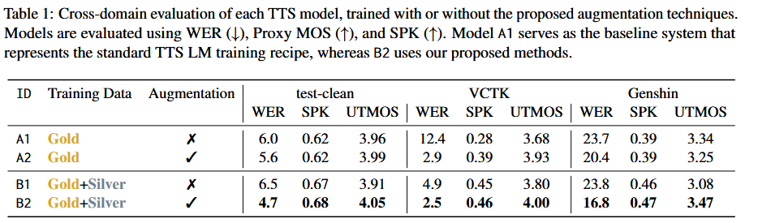

Scaling Zero-Shot TTS with Speaker-Agnostic Training
Abstract.
The goal of language model (LM)-based zero-shot text-to-speech (TTS) is to synthesize speech with voices unseen during training. However, zero-shot TTS requires labeled speaker information for each utterance during training. This information is expensive to acquire, making it difficult to scale systems to large amounts of data. In this paper, we show that these issues can be overcome by simply combining a large dataset without speaker labels and a smaller dataset with speaker labels, before training a TTS model on the mixture. To prevent information mismatch between the two types of data, we introduce new data augmentation techniques to regularize model training: speaker dropout and speaker scrambling. As a result, we achieve relative gains up to 64\% better speaker similarity and 67\% lower WER, when compared to standard training recipes. We show that our method not only generalizes well to low-resource and cross-lingual settings, but also scales to over 200K hours of training data. We will open-source all code and pre-trained models.
Model Overview

LibriSpeech Samples
Text
Speaker Prompt
Ground Truth
A1
A2
B1
B2
Also, a popular contrivance whereby love making may be suspended, but not stopped, during the picnic season.
He hoped there would be stew for dinner: turnips and carrots and bruised potatoes and fat mutton pieces to be ladled out in thick peppered flour fattened sauce.
He could wait no longer.
You will find me continually speaking of four men: Titian, Holbein, Turner, and Tintoret, in almost the same terms.
VCTK Samples
Text
Speaker Prompt
Ground Truth
A1
A2
B1
B2
The pain was almost too much to bear.
You have to rely on each other.
It took about an hour for the gas to clear.
It does not even have a staff shortage.
Genshin Samples
Text
Speaker Prompt
Ground Truth
A1
A2
B1
B2
When training to become a shrine maiden, the title of "Chokkai" is granted once one has completed their requisite studies and can correctly chant for ceremonies. This might be very straightforward for humans, but it's the most difficult step for the kitsune... We are only foxes, after all.
Yes, it was the sacred duels of Genius Invokation TCG that formed and cemented our bonds of mutual understanding. It's my firm belief that by simply playing the game, players can develop a deeper level of understanding between one another.
I began with tea at Third-Round Knockout today...
(Just wait for me to bring back that big scoop!)
Cross-Lingual Samples
Text
Speaker Prompt
Ground Truth
Trained with Speaker Labels
Trained with Augmentation
They moved thereafter cautiously about the hut groping before and about them to find something to show that Warrenton had fulfilled his mission.
And lay me down in thy cold bed and leave my shining lot.
Number ten, fresh nelly is waiting on you, good night husband.
Yea, his honourable worship is within, but he hath a godly minister or two with him, and likewise a leech.